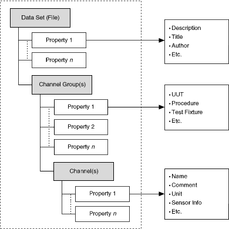

TDM data model arranges the data in three hierarchical levels: file, channel groups, and channels. The following figure illustrates the TDM data model.

In the previous figure, the file level can contain an unlimited number of channel groups, and each group can contain an unlimited number of channels. Each channel contains a 1D array of data values.
This data model enables you to organize your data flexibly and make the data easy to understand. For example, you can have one group for raw data and another group for the analyzed data in one single file. You can also have multiple groups that correspond to sensor types or locations.
At each level of the hierarchy, you can store an unlimited number of custom scalar properties. Each level accepts an unlimited number of custom properties to achieve well-documented and search-ready data files. The descriptive information located in the file, a key benefit of this data model, provides an easy way to document the data without having to design your own header structure. As your documentation requirements increase, you do not have to redesign your application; you only need to extend the current model to meet the specific requirements. The more custom properties you use to document the measurement data, the more easily you can locate the data at a later time.